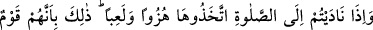
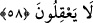

58. Namaza çağırdığınız zaman onu alay ve eğlence konusu yaparlar. Bu onların
düşünemeyen bir toplum olmalarındandır.
“Namaza çağırdığınız zaman onu” namazı ve ezânı “alay ve eğlence konusu
yaparlar.” Müezzinler ezân okudukları zaman yahûdîler kendi aralarında gülüşürler,
namazla alay etmek için birbirlerine kaş göz işaretleri yaparlardı. Bu hareketleriyle
güya müslümanların ne kadar câhilce bir iş yaptıklarını gösterip insanlarda namaza ve
ona dâvete karşı bir isteksizlik uyandırmaya çalışırlardı. Onlarda yerleşik bir huy hâline
gelen “bu” alay etme, “onların düşünemeyen bir toplum olmalarındandır.” Yani,
akılları olmadığı için böyledir. Çünkü, sefihlik insanı, hakkın güzelliklerini bilmemeye
ve onunla alay etmeye götürür. Şayet onların bir parça akılları olsaydı bu büyük günaha
cür’et etmezlerdi.
Mesnevî’de şöyle denilmiştir:
Kötü ve hayırsız adam, lengersiz gemi gibidir
Deli rüzgardan kurtulamaz
Âlimler, ezânın sadece rüyâ ile değil bu âyetin nassı ile de sabit olduğunu söylerler.
Çünkü âyetin anlamı “İnsanları ezânla namaza çağırdığınız zaman...” demektir. Nidâ,
yüksek sesle yapılan çağrıdır. Ezânda, İslâm’ın alâmetlerini ve kelime-i tevhîdi îlan,
namaz vaktinin girdiğini ve namaz kılınacak yeri bildirmek, cemaate dâvet ve diğer pek
çok hikmetler vardır.
Bir yerde iki müezzin bulunsa bunlardan birinin sesi çok güzel olsa, fakat ezân
okumak için ücret talep etse; diğeri ise bu işi ücret istemeden yapsa, fakat sesi arkadaşı
kadar güzel olmasa bu durumda hangisinin tercih edileceği hususunda iki görüş vardır.
Daha doğru olan görüşe göre sesi güzel olana istediği ücret verilir. Çünkü güzel sesle
okunan bir ezânın gönüllere büyük te’siri vardır. Çirkin sesin ise usandırıcı ve ürkütücü
bir etkisi vardır.
Mesnevî’de şöyle denilmiştir:
Bir müezzin vardı, sesi pek çirkin
Kâfir ülkesinde ezan okudu
Ezan okuma, savaş çıkar
Düşmanlık uzar, dedilerse de
İnat etti, umursamadı
Kâfir ülkesinde ezan okumaya devam etti
Halk, umumi bir kargaşadan korkarken
Elinde bir elbise bir kâfir çıkageldi